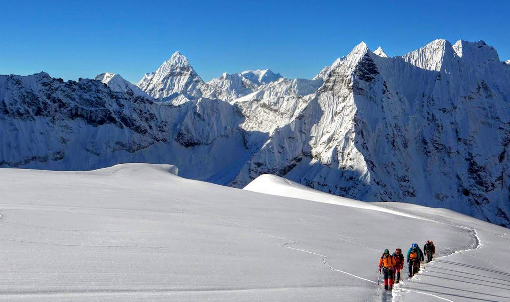
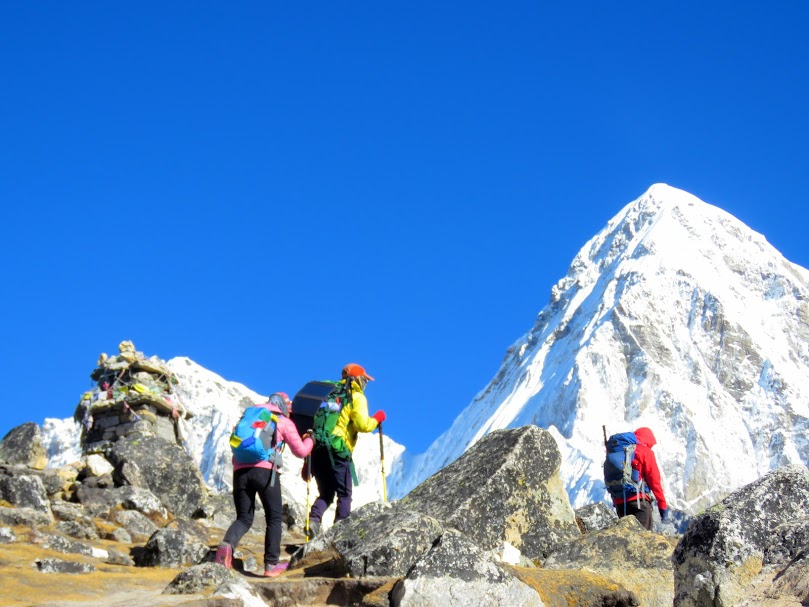
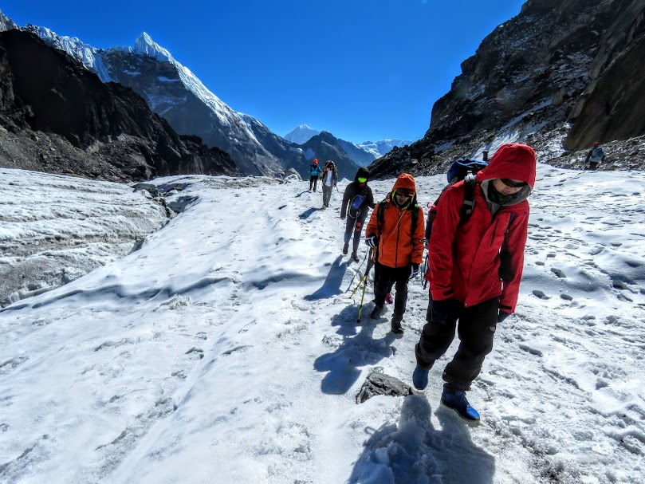
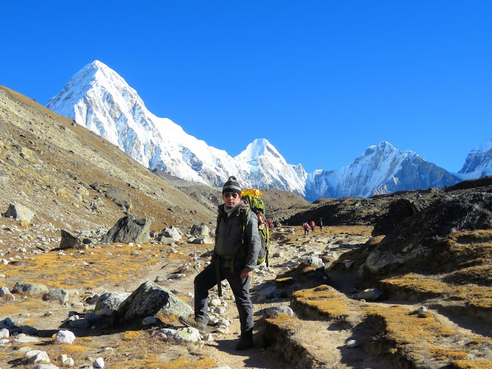
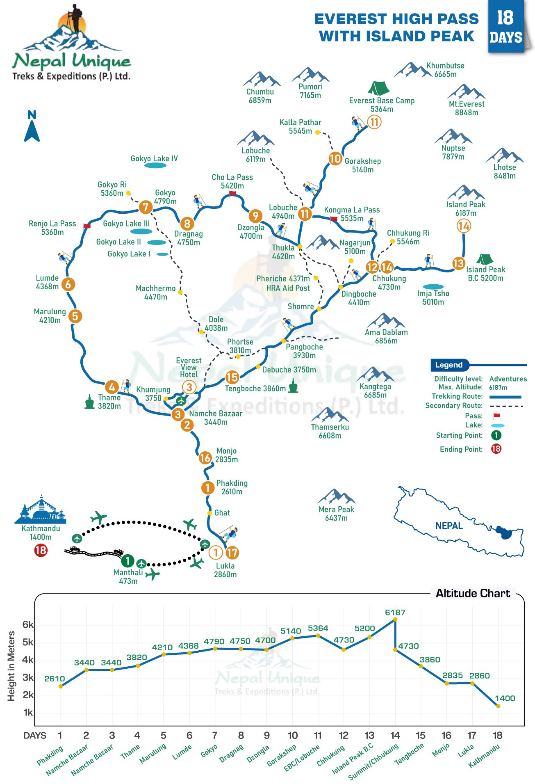

Everest High Pass with Island Peak
Everest High Pass with Island Peak trekking is part of adventurous Trekking in Nepal, which lies in the highlands of the Khumbu region. The Everest high passes include three High passes: Kongma La Pass, Cho La Pass, and Renjo La Pass.
.jpg)




Key Trip Facts
Trek Overview
Trip Highlights
Everest High Pass with Island Peak Overview
Everest High Pass with Island Peak trekking is part of adventurous Trekking in Nepal, which lies in the highlands of the Khumbu region. The Everest high passes include three High passes: Kongma La Pass, Cho La Pass, and Renjo La Pass. The Kongma la Pass, Cho la Pass, and Renjo la Pass are at altitudes of 5320m, and 5446m, respectively.
While trekking through this Everest Region Trekking , we can get an incredible look at Mount Everest and other surrounding high peaks. The view of a giant sky kissing snow with white snow covering all parts will surely draw the attention of many nature lovers. Many trekkers have only one dream of watching the scene of these giant mountains with their naked eyes.
Due to the growing popularity of its beauty along with its adventurous nature, the route is becoming more popular day by day. Despite its difficulties, many people dreamt of a trek to this region. The trekking route starts from Lukla, where we will fly from Kathmandu on a domestic plane. After Lukla, the way goes up to Everest through the main trekking route. The Everest Base Camp Trek goes all the way through the Sherpa community, where we can observe the lifestyle and the traditions of the Sherpa people closely.
We can see many monasteries and beautiful, colorful flags along the route. As we know, the attempt to trek to this region is generally tough, especially in the highlands, so we have to be careful while trekking. We have to take proper rest and need to adapt ourselves to the increasing altitude throughout the trek.
Everest High Passes Trek with Island Peak Highlight
Embark on the thrilling Everest High Passes Trek with Island Peak Climbing, where adventure and breathtaking views await at every turn.
Cross the challenging high passes: Renjo La (5,360 meters), Cho La (5,420 meters), and Kongma La (5,535 meters).
Climb the majestic Island Peak Climbing for stunning panoramic views.
Visit ancient Tibetan monasteries, Chortens, and stupas along the trail.
Witness rare wildlife in Sagarmatha National Park, including musk deer, blue sheep, and Himalayan tahr.
Breathtaking views of the world’s tallest peaks, including Everest, Makalu, and Lhotse.
Immerse yourself in Sherpa culture with traditional villages, Buddhist rituals, and prayer flags.
Reach Everest Base Camp (5,364 meters) and stand in awe at the foot of the mighty Mount Everest.
Are you ready for an unforgettable Everest Base Camp with Island Peak Climbing? This thrilling journey through the Everest Region Trekking offers the ultimate test of endurance and rewards you with some of Earth's most spectacular mountain scenery. Moreover, the trek combines the challenge of crossing three high passes of Everest with the excitement of scaling Island Peak. All while immersing you in the awe-inspiring beauty of the Himalayas.
As we trek through the diverse terrain, we'll pass through Sherpa villages adorned with ancient monasteries, Chortens, and fluttering prayer flags. Moreover, the landscape shifts dramatically from lush forests and serene lakes to rocky ridges and glaciers. Each new sight offers a unique experience. Renjo La, Cho La, and Kongma La provide stunning views that will take your breath away, and reaching Everest Base Camp marks a truly iconic moment in your journey.
Nature in this remote corner of the world is as captivating as the peaks themselves. Sagarmatha National Park, a UNESCO World Heritage site, shelters rare wildlife like blue sheep, Himalayan tahr, and musk deer. The vibrant rhododendron forests and snow-capped mountains create a dramatic backdrop to your trek. In addition, the sounds of birds and the wind add to the serenity of the surroundings.
The culture along the way is equally captivating. The warmth and hospitality of the Sherpa people, their Buddhist customs, and the rhythmic chanting of monks at monasteries create a spiritual atmosphere. If you're fortunate, you might witness a local festival where traditional masked dances and religious ceremonies add depth to the experience. To summarize, this journey blends breathtaking landscapes, cultural discovery, and adventure in a way that will leave you with memories to cherish forever.
Why choose Nepal Unique Treks for this trek?
We provide an experience you won't soon forget at Nepal Unique Treks. We have been leading trekkers from all over the world for more than 20 years, guaranteeing smooth and trouble-free travel. Furthermore, as a government-approved trekking company, we provide safety, comfort, and first-rate service to make your Himalayan adventure genuinely unforgettable.
Our crew of knowledgeable guides has been negotiating the difficult Himalayan terrain for more than ten years and is government-certified. Moreover, they are also well-versed in high-altitude treks, the local way of life, and the landscape. They also guarantee that you are educated, secure, and fully engaged in the experience. In addition, our guides are available to help you at every stage, whether you're facing challenging climbs, acclimating to higher elevations, or learning about local customs.
We provide itineraries that are specifically designed to meet your needs because we recognize that every trekker has a distinct speed and choice. We can customize a journey to fit your timetable, add extra days for acclimatization, or let you discover undiscovered treasures along the way. Our itineraries are also designed to offer the ideal ratio of adventure, security, and cultural exposure.
We handle every aspect of logistics, from obtaining permissions to setting up the greatest lodging and food options. To guarantee your comfort and provide you with friendly hospitality in the heart of the Himalayas, we also carefully choose tea houses and lodges. Our solid local ties also provide an additional degree of ease, enhancing the immersion and smoothness of your journey.
Permits required for High Pass Trek with Island Peak Climbing
We are required to obtain a permit to traverse certain protected areas along the path. The officials will verify our permits upon our arrival at the designated destination, and only then will we be permitted to access the area. This is why it is imperative to obtain a permit for this expedition. For the High Pass Trek with Island Peak Climbing, we require the following permits:
Entry Permit for Sagarmatha National Park
Sagarmatha National Park is a protected area that was established by the Government of Nepal to safeguard the flora and fauna of the region. Additionally, we must traverse the national park during our voyage. Therefore, an entry permit to Sagarmatha National Park is necessary.
Entry Permit for the Khumbu Pasang Lhamu Municipality
Similarly, to assist the local community of the Khumbu Region and contribute to the local infrastructure and developmental initiatives, we require a Khumbu Pasang Lhamu Municipality Entry Permit.
Island Peak Climbing Permit
A permit is required to ascend Island Peak Climbing, which can be obtained from the Nepal Mountaineering Association (NMA). Moreover, it also allows monitoring the travelers for their safety within the protected areas.
Trekker's Information Management System (TIMS) Permit
In addition, there is a special permit, the Trekker's Information Management System (TIMS) Permit, which allows government officials to monitor the trekkers for their well-being and safety. At Nepal Unique Treks, we assist you in getting these permits without any hassle. Let us streamline the process of obtaining these permits while you prepare for the trek.
Why does the High Pass Trek with Island Peak Climbing require insurance?
Trekking through the Himalayas is an adventure of a lifetime, but it comes with unpredictable risks. From sudden altitude sickness to unforeseen injuries or extreme weather, challenges can arise at any moment. In such situations, having the right travel insurance can be a lifesaver, ensuring you receive timely medical attention or emergency evacuation when needed.
Before starting your journey, it’s crucial to choose an insurance plan that covers the overall aspects. Policies vary, but the best ones cover medical expenses, high-altitude evacuation, trip cancellations, and lost baggage. Moreover, while traversing through remote areas where medical facilities are scarce, a reliable insurance plan gives you peace of mind, allowing you to focus on the adventure.
Even though we schedule treks during the best seasons, like spring and autumn, weather conditions in the mountains remain unpredictable. Sudden storms or heavy snowfall can disrupt the route, forcing delays or even cancellations. With proper insurance, you can recover non-refundable costs and avoid unexpected financial burdens. To summarize, while our expert guides will be there to assist you at every step, insurance provides an extra layer of protection. It ensures that, in case of emergencies, you receive immediate support without worrying about expenses. Moreover, Nepal Unique Treks can assist you in providing this insurance without any hassle.
Everest High Pass with Island Peak Itinerary: Day by Day
18 Days program for Everest High Pass with Island Peak. Daily timings and sequences remain flexible according to weather, flight operations, and group pace.
Day 1: Drive from Kathmandu (1400m) to Ramechhap and Flight to Lukla (2840m). After that, a Trek to Phakding (2610m)
Approx. 2,610 m / 8,563 ft
Our journey to the Everest Region Trekking begins on the third day as the Nepal Unique Treks representatives drive you to the bus stop. From there, we will go for an adventurous drive to Ramechhap. The early morning drive from Kathmandu to Ramechhap covers a total distance of 132 kilometers (82 miles) which takes approximately 5 hours. This amazing drive takes you through winding mountain roads, past charming villages, lush terraced fields, and scenic river valleys. Along with that, you also get to indulge in Nepal’s rural beauty before reaching Manthali Airport. From the Manthali Airport, you board an exhilarating 20-minute flight to the Tenzing and Hilary Airport (Lukla). This airport, known as one of the most adventurous airports in the world, is also considered the gateway to Everest. Upon landing, you can rest for a while before going for the first trek towards Phakding. As this is the first walking day, we will cover a short distance and only walk for about 4 to 5 hours. However, on this walk, you will start feeling the Himalayan breeze, hear birds chirping, and pass many Sherpa settlements. Upon reaching Phakding, you will find yourself in a small settlement across some lush pine forests and start experiencing the spiritual and cultural essence of the Khumbu region. Here, you can unwind, enjoy a warm meal, and take in the fresh mountain air. Furthermore, we also recommend you to interact with the locals and enhance your knowledge about this village.
Day 2: Trek from Phakding (2610m) to Namche Bazaar (3440m)
Approx. 3,440 m / 11,286 ft
Day 4 stands as one of the most significant days of the entire Everest High Passes Trek with the Island Peak Climbing Package or any other Everest Region Trek. That is because, on the fourth day, the trekkers make their way to one of the most beautiful, well-developed, and amazing towns of the Everest Region Trekking, the Namche Bazaar. Wake up early in the morning, have your breakfast, and lace up your boots because we have a tough route to cover. The trail to Namche Bazaar follows the Dudh Koshi River and passes through dense pine forests, picturesque Sherpa villages, and cascading waterfalls. It's seriously not possible to not take a break every few minutes to witness the beauty of nature. Well, let us also give you a challenge! It will be to count how many suspension bridges you cross on a single day and don't forget to count the most famous one, the Golden Gate Bridge. From this bridge, you can watch a deep gorge far down below. Continuing the walk on the High Passes Trek with Island Peak Climbing journey, you will enter the Sagarmatha National Park. However, before that, you must get your permits checked by the officials. As you enter the protected land, you will get first glimpses of Mount Everest through the trees. Everything is fun until you need to ascend the final steep before reaching Namche Bazaar. This steep climb is certainly difficult but the endpoint, it's just amazing. We will see Namche on the next day as it will be a rest day here. For today, you can go for a quick stroll and then return to the hotel for dinner and an overnight stay.
Day 3: Acclimatization Day at Namche Bazaar (3440m)
Approx. 3,440 m / 11,286 ft
Well, as mentioned on day 4, today will be an acclimatization day at Namche Bazaar. As we have ascended to an altitude of 3440 meters above sea level, your body will certainly need some time to adapt to this high altitude. Therefore, we will not ascend any further on this day; it will be a rest day at Namche Bazaar. However, a rest day does not mean that we will stay idle for the entire day. Instead, the guides will take you for a short and quick hike to the Everest View Hotel, a masterpiece of engineering and infrastructure. Just imagine sipping beverages at an altitude of 3880 meters above sea level, that too, with the closest and cleanest view of Mount Everest! Well, it's your moment to enjoy, all your time. After a few hours, we will return to Namche Bazaar. Here, you can once again, go for a stroll around the town, interact with the locals, try some local delicacies, and also take out some cash from the ATMs. In the evening, we will have dinner and go for a sound rest in Namche Bazaar.
Day 4: Trek from Namche Bazaar (3440m) to Thame (3820m)
Approx. 3,820 m / 12,533 ft
Well, from the sixth day, we will part ways from the regular Everest Base Camp Trekking route. As you wake up early in the morning and have your breakfast in the hotel, the guides from Nepal Unique Treks take you on an off-the-beaten-path that showcases the spiritual side of the Khumbu region. This section of the Everest High Passes Trek with Island Climbing trail covers an approximate distance of 9 kilometers, which takes 3 to 4 hours to complete. Though not as frequented by trekkers, this path holds immense historical and cultural significance, as it was once a major trade route connecting Nepal and Tibet. As we slowly and gradually ascend on this trail, you can sense the crisp Himalayan air entering your lungs. Moreover, this section of the trail also offers stunning panoramic views of peaks like Kusum Kanguru (6,367m), Kongde Ri (6,187m), and Thamserku (6,623m). Along the path, we also pass through different Sherpa settlements. Besides, watch how the Children wave curiously, yaks graze peacefully, and colorful prayer flags dance in the wind. After walking for 3 to 4 hours, we finally enter Thame, a village that unfolds like a hidden gem, nestled against a backdrop of towering peaks and rolling green hills. Talking about Thame, this village stands as one of the oldest and most culturally rich Sherpa villages. Just take your time to witness the beauty offered by this amazing village, interact with the locals, and not to mention, try out the delicious cuisines offered by the local Sherpas. At night, you can have a fulfilling dinner before sleeping in the hotel.
Day 5: Trek from Thame (3820m) to Marulung (4210m)
Approx. 4,210 m / 13,812 ft
Another day and another thrilling trail awaits in the Everest Three Passes Trek with the Island Peak Climbing map. After having a delicious and locally prepared breakfast in the hotel, we leave behind the peaceful Thame village. Just picture this: you leave this calm village and delve deep into the isolated valleys of the Khumbu region, following an ancient trade route once used by Tibetan merchants. After we walk for some time, you will find yourself ascending through Thame Teng. With some more moving your legs, we also pass through a couple of smaller Sherpa settlements, including Chanakpa and Tauranga. On this section of the High Passes Trek with Island Peak Climbing trail, we witness traditional stone houses, spinning prayer wheels, and Mani walls whispering the tales of Himalayan heritage. Furthermore, you will also witness the landscape shifting into the lush pastures and alpine meadows. Remember that, this section of the Three Passes with Island Peak trail remains isolated for most of the time as very few trekkers choose this path. Therefore, the only sounds accompanying your journey are the gentle hum of the wind and the occasional yak bell. Besides, in the distance, glacial streams carve through the valley, which also add rhythmic flow to the serene landscape. It takes about 4 to 5 hours for us to reach Marulung from Thame while covering an approximate distance of 5.8 kilometers. As you reach Marulung, you will see a remote mountain village tucked beneath towering ridges. Let us make it clear to you that this village has very few teahouses offering shelter but offers a sense of raw and unspoiled beauty. Due to these reasons, Marlung stands as one of the perfect places for rest and acclimatization.
Day 6: Trek from Marulung (4210m) to Lumde (4368m)
Approx. 4,368 m / 14,331 ft
Today the trekkers will only have to walk for about 3 to 4 hours as we cover an approximate distance of 2.4 kilometers. Yes, the trail from Marulung to Lumde does not require much strength and difficulty because we have very little to walk. However, let us tell you that this is also the last stop before ascending to one of the three highest passes of the Everest Region, the Renjo La Pass. This section of the high passes trek with the Island Climbing trail follows the Bhote Koshi River, gradually climbing through barren, glacial-carved landscapes where the air grows crisper and thinner. Along the way, you will also pass through some scattered yak pastures, ancient Mani walls, and isolated stone houses. These factors offer a glimpse into the resilient lifestyle of the Sherpa people. Lumde, a village with dramatic scenery and eye-watering views of towering peaks, takes you deep into the meditation state. We recommend the trekkers explore the village and interact with the locals before taking a sound rest in a comfortable hotel at Lumde. Make sure that you take proper rest because there is some serious walk to be done on the next day.
Day 7: Trek from Lumde (4368m) to Gokyo (4790m) via Renjo La Pass (5360m)
Approx. 4,790 m / 15,715 ft
Are you ready for one of the most thrilling and rewarding days of the trek? Today, the guides will lead you on a trail to one of the three highest passes in the Everest region, Renjo La Pass (5,360 meters). This challenging yet rewarding and scenic route offers some of the most breathtaking views in the entire Everest region. We begin the walk as early as possible, but only after you have your breakfast. After that, we move forward on a gradual ascend through a rugged, glacial-carved landscape. Besides, the trail zigzags steeply upward, testing your endurance, but each step brings you closer to an unforgettable panorama. As you reach the summit of Renjo La Pass, just take a moment to look around you. Believe us, the panoramic views of Everest, Lhotse, Makalu, and the shimmering turquoise lakes of Gokyo Valley will certainly drop your jaw. Don't all these factors and scenes feel exactly like why you booked this outstanding adventure? After spending some precious time on the Renjo La Pass, we will continue our walk towards Gokyo. Walking down the stone stairways, winding ridges, and pristine alpine lakes, we finally reach Gokyo in the late afternoon. After a long but deeply rewarding day, you can settle in your tea house, and take a proper rest in the cozy and comfortable room.
Day 8: Trek from Gokyo (4790m) to Dragnag/Thangnag (4750m)
Approx. 4,750 m / 15,584 ft
How was your experience of staying at one of the three highest passes of the Everest region? After such an exhilarating journey, it's now time to go for a gentle walk from Gokyo to Dragnag (Thangnag). This will certainly be a short trekking journey but certainly a rewarding one as we will get access to the Ngozumpa Glacier, the longest glacier in the Himalayas. However, the total walking hours will be between 4 to 5 hours as we cover a total distance of 4.5 kilometers on this day. Imagine walking over a massive, ever-shifting river of ice! Well, that's exactly what we will be doing on the tenth day of the Everest Passes Trek with Island Peak ascending. Walking through a maze of moraines, icy ridges, and scattered boulders, this section of the trail certainly has so much to offer. Especially for the adventure-seekers and adrenaline-rushing admirers, very few things might be better than this. As we walk past the glacier, the terrain becomes more manageable, with rocky trails leading us toward the secluded village of Dragnag (4,750m). Furthermore, the overall environment becomes more peaceful and calm as we enter the village. Due to that reason, most of the trekkers choose Dragnag as one of the best villages to rest during the Everest Three High Passes Trekking from this less traveled route. Take your time to explore the village, interact with the locals, and go for a sound rest before ascending to Cho La Pass on the next day.
Day 9: Trek from Dragnag/Thangnag (4750m) to Dzongla (4700m) via Cho La Pass (5420m)
Approx. 4,700 m / 15,420 ft
Well, here we arrive at another checkpoint in the Everest High Passes Trekking trail. It's the day when we conquer the second of the three high passes in the Everest region before ascending to the peak of Island Mountain. So, are you ready to ascend to the altitude of 5420 meters above the sea level? If so, our guides will lead you on the trail as soon as you have your breakfast and get ready with all the necessary gear and backpacks. Today's journey begins with an early morning ascent through some steep and rocky terrain while we navigate the way toward the Cho La Pass. Keep ascending and you will notice the sun slowly lighting up the surrounding peaks and turning them golden. The climb is tough, which means you need to afford careful footwork over loose rocks and icy sections. However, every step brings you closer to one of the most stunning vantage points in the Himalayas. It takes about 3 to 4 hours for us to reach the top of the Cho La Pass. After that, the trekkers can spend some amazing time at the top of the pass before we make our way to Dzongla. On your time at the Cho La Pass, the trekkers can witness outstanding views of towering snow-covered peaks, deep valleys, and vast glaciers stretching into the distance. Furthermore, the pass itself stands as a dramatic, icy landscape where the wind whispers tales of past adventurers who have braved this crossing. After staying in this pass for some time, we will make our way to Dzongla, which takes another 2 to 3 hours. Take your time to rest in the hotel at Dzongla to prepare for another adventurous day.
Day 10: Trek from Dzongla (4700m) to Gorakshep (5140m)
Approx. 4,700 m / 15,420 ft
As mentioned on the eleventh day's itinerary, we will go on an adventurous journey on the twelfth day. After you have your breakfast in the hotel, our guides lead you on a rugged and spectacular trail that leads to Gorakshep. Do you know that Gorakshep is the last settlement before the Everest Base Camp? Located at an altitude of 5,140 meters above sea level, this village offers outstanding views of different mountain peaks, including Cholatse and Ama Dablam. This section of the Everest High Passes Trek with Island Peak Climbing trail begins with a gentle descent taking us through grassy meadows and glacial moraines. This section of the trail also reconnects us with the classic Everest Base Camp Trail at Lobuche (4,940 meters). From here, you can notice that the terrain becomes rockier and more challenging. Moreover, we also have to walk alongside the Khumbu Glacier, the largest glacier in Nepal. A little before we reach Gorakshep, the trail turns into a remote, barren expanse surrounded by the world's tallest peaks. After reaching Gorakshep, we recommend the trekkers store their belongings in the hotel and then go for a quick stroll around the village. In the evening, you will return to the hotel for dinner and an overnight stay.
Day 11: Trek from Gorakshep (5140m) to Everest Base Camp (5364m) then Descend to Lobuche (4910m)
Approx. 5,180 m / 16,995 ft
Imagine visiting the Everest region and not going up to the Everest Base Camp! Would you want to be that person? Of course not! Therefore, Nepal Unique Treks take you to the Everest Base Camp on the thirteenth day before going to Lobuche. The hike to EBC from Gorakshep only requires us to walk for about 2 to 3 hours. Once you reach there, you will feel like it's a completely different world. Small tents settled by the Everest Summit Ascenders, prayer flags representing the Buddhist religion, and people getting ready to conquer the highest peak of Earth. Well, all of these factors are enough to take you in a dream, a sense of success, a sense of accomplishment, and help you regain the self-confidence to ascend the Island Peak. After spending some time in the base camp and capturing outstanding memories, we begin the descent to Lobuche. To reach Lobuche, we first return to Gorakshep and also have breakfast there. After that, the trail descends further along the Khumbu Glacier’s moraine, offering stunning views of Nuptse, Pumori, and Lingtren. Well, let us tell you that the trail is easy on the lungs but a little difficult for the legs. That's because we make our way through the uneven rocky path and loose gravel, which makes the trail a little difficult. In Lobuche, you will feel the air getting thicker in oxygen, giving you perfect rest and acclimatization after such a high-altitude walk. Have a delicious breakfast in the hotel before going for a cozy and relaxing sleep.
Day 12: Trek from Lobuche (4910m) to Chhukung (4730m) via Kongma La Pass (5535m)
Approx. 4,730 m / 15,518 ft
After walking for 13 days on the Everest Three Pass and Island Peak Climbing map, we will ascend on the last of the three passes on the 14th day. The guides from Nepal Unique Treks lead you on a remote and less-traveled route toward Kongma La Pass (5,535m), the highest of the three passes, after breakfast. Starting with a steep ascent over loose rocks and glacial moraines, this section of the trail keeps getting difficult as we gain altitude. Moreover, the challenge intensifies once we cross the base of the pass. Yes, keep in mind that, from the base, the trail to Kongma La Pass becomes a sharp, unrelenting climb. However, once you start getting the panoramic views of Lhotse, Nuptse, Makalu, and Ama Dablam, all the difficulties fade into the sky. Take your time to enjoy standing on the highest pass of the Himalayas and collect as many memories (photos and videos as possible. However, also be cautious about altitude sickness and keep yourself safe from it. As we are at such a high altitude, the risk of altitude sickness stays at around 80% to 100%. After spending some precious time on the Kongma La Pass, we make our way back to Chhukung, a beautiful Sherpa settlement at 4730 meters. The descent is steep and technical, weaving through a rugged landscape of glacial lakes and boulder-strewn paths. However, you can witness the terrain softening gradually as we enter the Imja Valley. After an intense but fulfilling day, you’ll finally arrive at Chhukung, a peaceful village nestled in the shadow of Island Peak, where a warm meal and relaxing coziness await.
Day 13: Trek from Chhukung (4730m) to Island Peak Base Camp (5200m)
Approx. 4,730 m / 15,518 ft
On the fifteenth day, we make our way to the base camp of the long-awaited Island Peak. Located just 5 kilometers from Chhukung, this base camp is the final stop before climbing Island Peak. As we will be walking over an altitude of 5000 meters, the trekkers must be prepared to fight against the risk of altitude sickness. Moreover, this is also one of the best chances to delve deep into the alpine wilderness. Talking about the Everest Three Passes Trek with Island Peak Climbing track, is a gradual yet steady ascent, crossing through the rocky glacial moraine of the Imja Valley. One of the most amazing things that you can witness on this climb is the transformation of landscapes. Believe us when we say that your environment gradually changes from lush vegetated, green areas to rugged and barren lands. Besides, you can also get outstanding views of different mountains, including Lhotse, Ama Dablam, and Island Peak. After continuously walking for a few hours, we finally reached the Island Peak Base Camp, where the Sherpa teams set up tents near the Imja Khola. Along with you, many other trekkers and climbers are setting up tents in the base camp to ascend to this peak. Therefore, you will certainly have some company in the Island Peak Base Camp. Furthermore, we recommend the trekkers spend the rest of the day practicing climbing techniques, adjusting to the altitude, and reviewing safety protocols. At night, you will go for a delicious and fulfilling dinner before sleeping in the tent.
Day 14: Climb from Island Peak Base Camp (5200m) to Summit (6189m) then Back to Chhukung (4730m)
Approx. 5,200 m / 17,060 ft
Finally, it's the day when we climb over the Island Peak summit 6189 m from the Island Peak Base Camp. Not to mention, this will be the most thrilling and demanding day of the expedition. We begin our journey on this section of the three-pass trek with the Island Peak climbing journey in the early hours before dawn. As the journey begins before dawn, we recommend the climbers be ready with headlamps and trekking poles. Furthermore, this section of the Island Peak Climbing trail also takes us steadily along a steep, rocky trail toward the glacier field. After reaching the glacier (around 5,700m), you’ll gear up with crampons, harnesses, and ropes, preparing for the final ascent over icy slopes and crevasses. Well. let us also make you aware that the steepest challenge of this package awaits you near the summit. Seriously, we need to ascend on a near-vertical snow and ice wall which leads us to the exposed ridge. Remember that among all the sections of this trail, this final section requires sheer determination and the guidance of experienced Sherpas. From the snow-covered Island peak, you can enjoy the best panoramic views of Lhotse, Makalu, Baruntse, and Ama Dablam. Take your time to feel the chilling air at the peak, grasp every inch of the feeling of accomplishment, and collect as many memories as possible before we return to Chhukung. Another dinner to be eaten and another night to be spent at Chhukung before returning from the trail.
Day 15: Trek from Chhukung (4730m) to Tengboche (3870m)
Approx. 3,870 m / 12,697 ft
Finally, we have completed all the high passes treks and even the Island Peak climb, now it's time to descend from the journey. Leaving Chhukung, you retrace your steps through the stunning Imja Valley, with Lhotse and Ama Dablam standing tall in the morning light. Furthermore, we can also notice the trail gently passing through rocky ridges, glacial moraines, and small Sherpa settlements. Gradually, the air also gets thicker and becomes rich in oxygen making the walk easy and more convenient. This section of the Everest High Passes Trek with Island Peak climbing journey takes us past different other villages, including Dingboche and Pangboche, with the prayer flags fluttering all the way. The final stretch leads to the serene monastery village of Tengboche (3,870m), home to the famous Tengboche Monastery. Here, we take a short break before moving forward with the descending journey. It takes about 6 to 7 hours for us to reach Tengboche while covering an approximate distance of 13 kilometers.
Day 16: Trek from Tengboche (3870m) to Monjo (2835m)
Approx. 2,835 m / 9,301 ft
After having breakfast in Tengboche, we continue on the trail from Tengboche to Monjo. This 5 to 6-hour journey covering almost 9 kilometers begins as we pass through lush rhododendron forests. Furthermore, the sound of birds chirping and the distant ringing of yak bells keep you going on the trail. As you cross the Dudh Koshi River via a series of suspension bridges, the familiar sights of the Khumbu region unfold before you. Moreover, we also pass through Namche Bazaar one more time; a village known as the bustling heart of the entire Khumbu region. Take your time to enjoy a last cup of coffee or browse local shops for souvenirs before continuing on the trail to Monjo. A little more to walk before we reach the Sagarmatha National Park entrance marking a farewell to the high-altitude terrain. Moreover, we also pass through pine forests and scattered Sherpa villages, leading to Monjo (2,835m), a quiet and charming settlement nestled along the river. Finally, as you reach Monjo, it's your time to go for a rewarding and much-needed rest in the hotel. However, before that, remember to go for a quick stroll in the village and interact with the locals. In the night, you will have dinner and go for a cozy and comfortable sleep in Monjo.
Day 17: Trek from Monjo (2835m) to Lukla (2840m)
Approx. 2,840 m / 9,318 ft
Well, we are almost in the last moments of the Everest Three Passes Trek with the Island Peak Climbing package as this day's journey takes us to Lukla. It takes about 4 to 5 hours for us to cover 9.5 kilometers of approximate distance. Well, let us tell you that this section of the trail stands as one of the most well-developed and convenient trails. This walk is not just about walking, it's also about immersing yourself in the greenery, lush forest, rhododendron blossoms, etc, after such a long journey on the alpine terrain. As you reach Lukla and go to the hotel, you can store your belongings before heading out for a short stroll of the nearby areas. Take your time to enjoy the scenarios, lifestyle, and culture of Lukla. Remember that we will rest in Lukla on this day to help you recover from all the tiredness.
Day 18: Flight from Lukla (2840m) to Ramechhap and Drive to Kathmandu (1400m)
Approx. 1,345 m / 4,413 ft
Finally, it's the day when we finally leave the Everest region and return to Kathmandu. Early in the morning, you will have your breakfast and pack your bags properly. Make sure that you include all your belongings in the bag before we set off on the journey back to Kathmandu. After that, our guides will take you to the bus station from where you board on a 5-hour drive to Ramechhap. As you reach Ramechhap, we go for a 20-minute flight to the Tribhuwan International Airport, Kathmandu. There, you will again meet the representatives from Nepal Unique Treks who will drop you to the hotel in a private vehicle. Utilize the rest of the day to stroll around the city area, and visit different hotels, cafes, and spas, for relaxing and having some quick snacks. In the evening, we invite you for an authentic Nepali dinner, which means it will be a farewell dinner for the trekkers. Moreover, Nepal Unique Treks also provides you with a certification of accomplishment for completing the Everest Three High Passes Trek with the Island Peak Climbing trail.
What is Included (Regular Package)
What is Excluded
Booking Dates & Availability
Packing List for Everest High Pass with Island Peak
Fixed ropes, ice bars, and group climbing hardware are arranged by our Sherpa climbing crew; personal technical gear can be checked in Kathmandu.Technical Mountaineering Hardware (5 items)
Summit Apparel & Protection (4 items)
High-Camp Sleep & Approach (3 items)
Read before you book: Everest High Pass with Island Peak
Practical logistics derived directly from this package's route facts, inclusions, and elevation profile.
Accommodation & Meals (Hotel. Lodge, Tea House, Camping)
Accommodation follows the package grade (Hotel. Lodge, Tea House, Camping) in Kathmandu and along the Everest route. Check your package Includes section for included meals and Kathmandu hotel nights.
Permits & Local Logistics
Transportation is arranged via Flight & Private Car. Applicable permits listed in the package inclusions are arranged by Nepal Unique Treks prior to departure.
Route Difficulty & Elevation (6189 m)
Everest High Pass with Island Peak is rated Adventurous with a maximum elevation of 6189 m. Follow your guide's pacing and stay hydrated throughout the 18 Days itinerary.
Best Time to Visit (Spring (March – May), Autumn (Sep – Nov))
Recommended operating season on the source page: Spring (March – May), Autumn (Sep – Nov). Additional official notes from the source page follow below.
Traveller Useful Information
Physical Fitness:
Focus on endurance, strength, and cardio exercises. Hiking with a loaded backpack will help simulate trekking conditions.Altitude Training:
Gradually acclimatize your body to high altitudes by hiking in similar environments and building endurance.Climbing Skills:
Learn basic mountaineering techniques, such as using crampons and ice axes, especially for Island Peak.Gear and Equipment:
Ensure you have proper gear, including insulated clothing, trekking boots, a sleeping bag, and climbing equipment.Mental preparation:
Prepare mentally for the challenging trails and extreme weather conditions by building resilience.Health Checks:
Get a full medical check-up and consult a doctor for altitude sickness medications or vaccinations.Permits and Insurance:
Secure trekking permits and have comprehensive insurance that covers high-altitude trekking and climbing.Trekking Guide and Porters:
Hire an experienced guide and porters for safety and navigation on the trek and climb.Nutrition and Hydration:
Stay hydrated and bring energy snacks to keep your energy levels high throughout the trek.
As you embark on the Three High Pass Trek with Island Peak Climbing, you'll be immersed in the rich cultural traditions of the Sherpa people. Also known for their warm hospitality, the Sherpas welcome trekkers with traditional "Khata" (silk scarves) as a symbol of goodwill. Tibetan Buddhism plays a significant role in their daily lives. Monasteries, prayer flags, chortens, and stupas dot the landscape, providing trekkers with a spiritual atmosphere throughout the journey. Moreover, en route, we will witness locals engaging in religious rituals and ceremonies, offering you a glimpse into their deeply rooted traditions.
Furthermore, if the trek coincides with local Buddhist festivals like Lhosar (Tibetan New Year) or Tihar, you’ll experience an explosion of color, prayer, and dance. These festivals are marked by prayers, feasts, and elaborate dances, offering a vibrant and festive atmosphere. In addition, the cultural importance of these events is especially evident at sacred sites like the Tengboche Monastery. Here, the pilgrims and trekkers alike gather to celebrate, surrounded by chanting monks and fluttering prayer flags. Additionally, the high passes, Renjo La, Cho La, and Kongma La, are revered by the Sherpas, and crossing these peaks holds significant spiritual meaning.
Throughout the trek, we'll also have the opportunity to savor traditional Sherpa and Tibetan dishes. The dishes are momo (dumplings), Thukpa (noodle soup), and sel roti (rice doughnuts), which provide comfort and energy for the journey ahead. The religious significance of these remote peaks and the deep-rooted culture of the Sherpas make the Three High Pass Trek not only a physical challenge but also an enriching cultural experience.
Get ready for a challenging yet rewarding adventure through rugged terrain, high-altitude passes, and stunning mountain vistas. This trek offers the ultimate Himalayan experience, with Island Peak summit for a once-in-a-lifetime opportunity.
Test your endurance and thrill-seeking spirit as you navigate these three demanding high-altitude passes. Each pass offers unique views and adds an extra layer of adventure to your journey.
Climbing Island Peak rewards us with panoramic vistas of towering peaks like Everest, Makalu, and Lhotse. It's a thrilling, challenging climb that offers a sense of achievement and breathtaking scenery.
As we trek, we'll encounter sacred Buddhist monuments that showcase the spiritual side of the region. These sites, surrounded by stunning landscapes, add a sense of peace and reverence to your journey.
The trail is home to diverse flora and fauna, including the elusive musk deer and the majestic Himalayan tahr. Sagarmatha National Park is a haven for wildlife lovers, offering a rare glimpse into the natural beauty of the Himalayas.
Throughout the trek, be mesmerized by panoramic views of the world's highest peaks. Everest, Lhotse, and Makalu Tower above provide awe-inspiring backdrops as you journey through this spectacular region.
Engage with the warm and welcoming Sherpa people as you pass through villages that retain their traditional charm. Experience their unique customs, rituals, and colorful prayer flags fluttering in the mountain breeze.
One of the highest points of the trek, standing at the base of the world's highest peak, is an unforgettable experience. Feel the magnitude of Everest as you take in the breathtaking views from this iconic location.
The Everest High Passes Trek with Island Peak Climbing is one of the most challenging and rewarding adventures in the Everest region. It requires a high level of physical endurance, technical climbing skills, and proper acclimatization.
Moreover, this trek combines the Three High Passes (Kongma La, Cho La, and Renjo La) of the Everest region with the technical climb of Island Peak (6,189 meters). The journey is demanding due to the high altitude, steep ascents, glacier crossings, unpredictable weather, and long trekking hours.
The trek and climb takes you above 5,000 meters multiple times, increasing the risk of acute mountain sickness (AMS).
Kongma La (5,535 meters), Cho La (5,420 meters), and Renjo La (5,360 meters) demand proper acclimatization.
Island Peak (6,189 meters) requires spending hours at extreme altitudes with reduced oxygen levels.
This is a 20+ day trek covering rough terrain, steep ascents, and long walking hours.
Some trekking days involve 8–10 hours of walking, especially on high pass crossings.
The trek requires excellent stamina, strong leg muscles, and cardiovascular endurance.
Unlike the trek, Island Peak climbing is technical, requiring an ice axe, crampons, harnesses, ropes, and basic mountaineering skills.
The final ice wall (45-50° inclination) at 6,000 meters is the most technical section.
Crevasses and fixed rope sections demand previous climbing experience or training.
The high-altitude passes and Island Peak experience sudden weather changes, including snowstorms and strong winds.
Winter temperatures can drop to 20°C (-4°F) or lower, adding to the challenge.
Crossing glaciers can be risky in poor visibility and icy conditions.
Unlike the classic Everest Base Camp trek, this route is less crowded but more remote.
Fewer teahouses are available, and basic facilities make the journey more demanding.
Emergency evacuation options are limited, making proper planning essential.
Transportation plays a crucial role in the Everest High Pass Trek with Island Peak Climbing, ensuring smooth travel between Kathmandu and the Khumbu region. Typically, trekkers take a 30-35-minute flight from Kathmandu to Lukla, the gateway to Everest.
However, during peak seasons, flights often operate from Manthali Airport, requiring a 4-5-hour drive from Kathmandu before the 20-minute flight to Lukla. Nevertheless, both routes are subject to weather-related delays, which may disrupt travel plans. Alternatively, some trekkers opt for a helicopter ride, which, despite being expensive, offers a more reliable and scenic journey.
Once in Lukla, trekking becomes the primary mode of transportation. Unlike other regions, there are no roads, and travel depends entirely on foot. Typically, porters and yaks/mules carry heavy loads, making the journey more manageable. Regardless, trekkers must prepare for long, strenuous days over rugged terrain.
Moreover, crossing high passes of Everest such as Kongma La (5,535 meters), Cho La (5,420 meters), and Renjo La (5,360 meters) requires exceptional endurance. Despite these challenges, the breathtaking landscapes make every step worthwhile.
After summiting Island Peak (6,189 meters), trekkers must either descend on foot or take a helicopter evacuation. Understandably, some climbers, exhausted after the ascent, choose a helicopter ride back to Lukla or even Kathmandu. Conversely, budget-conscious travelers prefer trekking back, despite the additional effort. In the event of altitude sickness or injuries, emergency helicopter rescues are available, though they require insurance coverage.
Finally, returning to Kathmandu follows the same flight route from Lukla, though weather delays remain a concern. In summary, while multiple transportation options exist, careful planning and flexibility are essential for a smooth experience.
At Nepal Unique Treks, we ensure you a comfortable commute and check all the safety measures. Furthermore, you do not need to worry about the transportation for the entire journey.
The best seasons for the Three High Passes Trek in Everest with Island Peak Climbing are spring (March to May) and autumn (September to November). These seasons offer stable weather, clear skies, and ideal climbing conditions, making them the preferred choice for trekkers and climbers.
Spring, particularly March to May, is one of the most popular seasons for this trek. Temperatures are mild, ranging from -6°C to 15°C (21°F to 59°F) at higher elevations. Moreover, the trails are adorned with blooming rhododendrons, creating a picturesque landscape. Additionally, the ice and snow from winter begin to melt, making the high passes more accessible. On the contrary, early March can still be cold, especially at night, but the gradual temperature rise ensures comfortable trekking and safer climbing conditions.
Autumn, from September to November, is equally, if not more, favorable. The post-monsoon air offers crystal-clear mountain views, making this season ideal for photography. Furthermore, temperatures remain moderate, ranging between -8°C and 12°C (18°F to 54°F) at higher altitudes. Moreover, the weather is dry and stable, reducing the risks of avalanches and slippery trails. However, late November can be significantly colder, especially at Island Peak Base Camp, requiring extra preparation for freezing temperatures.
Conversely, Summer (June to August) and Winter (December to February) pose extreme challenges. The monsoon season brings heavy rainfall, landslides, and poor visibility, making trails dangerous and less scenic. Likewise, winter’s extreme cold and heavy snowfall make high pass crossings difficult, while Island Peak technical sections become even more treacherous. Nevertheless, experienced climbers seeking solitude may still attempt the trek in winter, but proper gear and expertise are essential.
In summary, spring and autumn remain the best seasons, offering the perfect blend of safety, scenery, and favorable conditions for a successful and memorable adventure.
Food and accommodation along the Everest Three High Pass Trek with Island Peak Climbing are relatively basic but sufficient for a comfortable trekking experience. Unlike the Everest Base Camp route, which offers more luxury options, the lodges in Everest Three Passes and Island Peak Base Camp are simple yet functional. Nevertheless, trekkers must be prepared for limited choices, higher costs, and basic facilities as they ascend to remote regions.
Accommodation is primarily in teahouses, small mountain lodges run by locals. Typically, rooms are twin-sharing with wooden beds, mattresses, blankets, and pillows. In lower elevations like Namche Bazaar and Dingboche, teahouses offer hot showers, WiFi, and heated dining halls, making the experience comfortable.
However, as trekkers approach high passes like Kongma La, Cho La, and Renjo La, accommodations become more basic, with no heating, shared bathrooms, and fewer amenities. At Island Peak Base Camp, climbers stay in tents, with meals prepared by the expedition crew. Despite the harsh conditions, the experience of camping under the Himalayas is unforgettable.
Food along the route is nutritious and carb-heavy, designed to sustain high-altitude trekking. Most teahouses serve Dal Bhat (rice, lentils, and vegetables), a staple providing long-lasting energy. Additionally, trekkers can enjoy noodles, pasta, soups, eggs, potatoes, and momos (dumplings).
In Namche Bazaar and other larger villages, bakeries offer fresh bread, pastries, and coffee, adding variety to the diet. However, as trekkers move higher, food options become limited and more expensive due to transportation challenges. Meat is not recommended at high altitudes as it travels long distances without refrigeration. Instead, protein sources like lentils, eggs, and cheese are safer choices.
In summary, food and lodging are simple yet sufficient, ensuring trekkers stay nourished and rested throughout the journey. Proper planning and flexibility help make the experience more enjoyable despite the remote setting.
Altitude sickness, also known as Acute Mountain Sickness (AMS), is a significant concern on the Three High Passes Trek with Island Peak Climbing due to multiple ascents above 5,000 meters. The rapid gain in elevation reduces oxygen levels, making trekkers vulnerable to AMS. Nevertheless, proper acclimatization, hydration, and preparation can significantly reduce risks.
Types of Altitude Sickness
Acute Mountain Sickness (AMS): The most common form, causing headaches, dizziness, nausea, fatigue, and difficulty sleeping.
High Altitude Pulmonary Edema (HAPE): A severe condition where fluid builds up in the lungs, leading to shortness of breath, chest tightness, and extreme fatigue.
High Altitude Cerebral Edema (HACE): The most dangerous form, where fluid swells in the brain, causing confusion, loss of coordination, and unconsciousness. HAPE and HACE are life-threatening and require immediate descent.
Acclimatization is crucial for preventing altitude sickness during the Everest Three Passes Trek with Island Peak Climbing journey. Therefore, we will go for a slow and steady ascend while following the rule of climbing high and sleeping low. Moreover, staying hydrated (3–4 liters daily) and consuming high-energy, carb-rich meals also stand as crucial acclimatization techniques. Trekking at a slow and steady pace prevents overexertion while avoiding alcohol and smoking supports better oxygen intake.
Diamox (Acetazolamide) may help prevent AMS, but consulting a doctor before use is necessary. If symptoms appear, stop ascending immediately; if they worsen, descend 300–500 meters for safety. In severe cases, helicopter evacuation may be the only option, making travel insurance with high-altitude coverage essential. In summary, awareness, preparation, and a cautious approach ensure a safe and enjoyable adventure at high altitudes.
There are multiple things you need to pack before starting this trek. Since the availability of the items in the trek can vary from place to place. And as we ascend, the probability of getting those items is much less. Therefore, it is recommended to pack these items as per your necessity as well. Below is a list of items for what to wear and what you need to pack for the Everest Three Pass Trek with Island Peak Climbing:
Waterproof Trekking Shoes
Thick Warm Woolen Socks
Trekking Trousers
Thermal T-shirt (Long Sleeves)
Down Jacket
Waterproof Jacket
Warm Waterproof Gloves
Headlight for Night or Sunrise Hike
High-Quality Trekking Poles
Day Backpack
Waterproof Bag
Thermal Water Bottle
First Aid Kit
Power Bank
Snacks (Energy Bars and Power Gel)
Trekking Trail Map
Mobile Phone and Power Bank for Mobile Charging
Padlock and Key for Safe Backpack
Sun protection cream, wet wipes, and hand sanitizer
Sleeping bags suitable for cold temperatures
Sunglasses, sun hat, or woolen cap
Medicines, Toiletries
Booking the Three High Pass Trek with Island Peak Climbing is simple and flexible, with multiple options to suit your convenience. You can reach out to us directly via WhatsApp, Zalo, or Viber at +977 9851023285. Alternatively, you can send an email to info@nepaluniquetreks.com or nepaluniquetreks@gmail.com. Our team is always ready to assist you with the booking process and customize the itinerary based on your preferences.
To secure your spot, we require a 30% deposit at the time of booking. This ensures your reservation and helps us make all necessary arrangements. Furthermore, you can discuss the available payment methods with our team for a smooth transaction.
Once your booking is confirmed, we will provide detailed information to help you prepare for the trek. This includes essential packing lists, travel tips, and itinerary details. In addition, if you have any questions or need further assistance, feel free to contact us anytime. We’re here to make your journey to Everest Base Camp smooth, exciting, and hassle-free.
Altitude Profile of Everest High Pass with Island Peak
Weather on Everest High Pass with Island Peak
Everest High Pass with Island Peak Route Map

Book This Trek
Contact our Kathmandu coordinators using the booking panel for private or fixed-group departures.
Trip Feedback
Explore verified traveller stories or leave feedback on Nepal Unique Treks.
Visit Nepal Unique Treks